含酒精的饮料通常分为三类：啤酒、葡萄酒和烈酒，酒精含量通常在3%到50%之间。酒精含量低于0.5%的饮料有时被认为是无酒精的。

许多社会都有独特的饮酒文化，酒精饮料融入到聚会中。大多数国家都有法律规范酒精饮料的生产、销售和消费。[ 1 ]一些法规要求标示酒精含量百分比（ABV或proof）并使用警告标签。一些国家 禁止饮用酒精饮料，但在世界大多数地方都是合法的。禁酒运动提倡反对饮用酒精饮料。[ 2 ] 2017 年全球酒精饮料产业规模超过 1.5 万亿美元。[ 3 ]酒精是世界上使用最广泛的娱乐性药物之一，目前约有 33% 的人饮酒。 [ 4 ] 2015 年，在美国，86% 的成年人都曾饮用过酒精，其中 70% 的人在去年饮用过，56% 的人在过去一个月饮用过。[ 5 ]其他几种动物也会像人类一样受到酒精的影响，一旦它们喝了酒，如果有机会就会再次喝下去，尽管人类是已知的唯一会故意生产酒精饮料的物种。[ 6 ]
酒精是一种镇静剂，属于一类精神活性药物，能够减缓中枢神经系统的活动。低剂量时，它会引起欣快感，减轻焦虑，并增强社交能力。高剂量时，它会导致醉酒、昏迷、昏迷甚至死亡（过量服用）。长期使用会导致酒精中毒，增加患多种癌症的风险，增加心血管疾病的风险，并产生身体依赖。
酒精被列为第一类致癌物。2023年，世界卫生组织的一份新闻稿称：“任何酒精饮料，对饮酒者的健康风险，从第一滴开始。” [ 7 ]
历史
编辑史前史
编辑晚石器时代罐子的发现表明，有意发酵的饮料至少在新石器时代就已经存在。[ 8 ]
在现今以色列海法附近的一个洞穴中，发现了迄今为止可证实的最古老的酿酒厂。研究人员发现了1.3万年前啤酒的残留物，他们认为这些啤酒可能用于纪念死者的祭祀盛宴。在洞穴底部雕刻的石臼中，发现了一种以小麦和大麦为原料的酒精的痕迹。[ 9 ]
古代
编辑 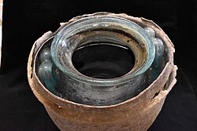
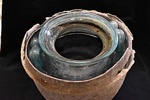
卡莫纳酒瓮是一个公元一世纪的罗马 玻璃瓮，内藏完整的葡萄酒。2019年，在西班牙卡莫纳市西部罗马墓地的考古发掘中，发现了这件酒瓮。五年后，对瓮内物品的分析认定，它是世界上现存最古老的葡萄酒，比之前的纪录保持者——施派尔酒瓶（发现于1867年）早了三个世纪。[ 10 ] [ 11 ]
早在 13000 年前的中东，人们很可能就已经用大麦酿造啤酒了。 [ 12 ] 老普林尼曾记载过罗马酿酒的黄金时代，即公元前 2 世纪（公元前 200-100 年），当时人们开始种植葡萄园。 [ 13 ]
对中国北方河南省贾湖新石器时代村落出土的古代陶罐进行检验和分析，发现了其中曾盛放过酒类的残留物。残留物的化学分析证实，在公元前7000至5600年，人们正在生产一种由葡萄和山楂果酒、蜂蜜酒和米酒制成的发酵饮料。[ 14 ] [ 15 ]
最早的酿酒证据可以追溯到公元前 6000 至 5800 年，地点是南高加索的格鲁吉亚。[ 16 ]
最早明确的用大麦酿造啤酒的化学证据可以追溯到公元前 3500 至 3100 年左右，出土于伊朗西部扎格罗斯山脉的戈丁泰佩遗址。[ 17 ] [ 18 ]
早在公元前 3000 年，凯尔特人就已开始制作各种苹果酒。[ 19 ] [ 20 ]在古希腊，以及公元前 1 世纪，人们在早餐或酒会上饮用葡萄酒。[ 21 ]
中世纪时期
编辑中世纪中东
编辑中世纪穆斯林化学家，如贾比尔·伊本·哈扬（拉丁语：Geber，九世纪）和阿布·巴克尔·拉齐（拉丁语：Rhazes，约 865-925年），对各种物质的蒸馏进行了广泛的实验。葡萄酒的蒸馏方法在肯迪（约 801 -873年）和法拉比（约 872 -950年）的阿拉伯语著作中得到证实，并在扎赫拉维（拉丁语：Abulcasis，936-1013年）的著作《Kitāb al-Taṣrīf》（后译为拉丁语《Liber servatoris》）的第28卷中得到证实。[ 22 ] 12 世纪：蒸馏工艺从中东传到意大利，[ 23 ] 12 世纪中叶意大利出现了蒸馏酒精饮料的记录。[ 23 ]
中世纪欧洲
编辑在意大利，塔德奥·阿尔德罗蒂（Taddeo Alderotti ，1223-1296 年）在其著作中描述了一种酒精浓缩方法，该方法通过水冷蒸馏器进行反复分馏。 [ 24 ]到 14 世纪初，蒸馏酒已遍布整个欧洲大陆。[ 23 ]蒸馏技术最迟在 15 世纪传到了爱尔兰和苏格兰，与此同时，欧洲人普遍采用蒸馏“生命之水”的做法，主要用于药用。[ 25 ] [ 26 ]
近代早期
编辑1690年，英国通过了《鼓励用玉米蒸馏白兰地和烈酒的法案》。[ 27 ]酒精饮料在早期的十三个殖民地中扮演着重要的角色，当时饮用葡萄酒和啤酒比饮用水更安全——而饮用水通常来自也用于处理污水和垃圾的水源。[ 28 ]在十九世纪早期的美国，饮用烈酒是很常见的。[ 29 ]
威士忌暴动（又称威士忌起义）是美国在1791年爆发、1794年结束的一场暴力抗税运动，当时正值乔治·华盛顿总统任期。所谓的“威士忌税”是新成立的联邦政府首次对国内产品征收的税。啤酒运输困难，而且比朗姆酒和威士忌更容易变质。
现代时期
编辑1808 年朗姆酒起义是新南威尔士军团在当时的英国流放殖民地新南威尔士发动的一场政变，目的是推翻总督威廉·布莱。这是澳大利亚第一次也是唯一一次军事政变，其名称源于早期悉尼的非法朗姆酒贸易，而“朗姆酒军团”对该贸易保持着垄断地位。19 世纪上半叶，这场政变在澳大利亚被广泛称为大起义。[ 30 ]酒类专卖制度在各国历史悠久，通常是为了限制酒类的供应和消费，以保障公共卫生和社会福利。
1850年，瑞典小镇法伦（Falun）设立了酒类专卖，旨在防止过度消费，并降低酒类销售的利润动机。1905年，瑞典议会下令所有伏特加酒必须通过地方酒类专卖机构销售，此后，这种制度在全国范围内推行。[ 31 ] 1894年，俄罗斯帝国对伏特加酒实行国家垄断，伏特加酒成为俄罗斯政府的主要收入来源。
十九世纪后期，美国、英国、加拿大、斯堪的纳维亚和印度兴起了禁酒运动，反对饮酒的呼声日益高涨，并最终导致加拿大（1918 年至 1920 年）、挪威（1919 年至1926 年只禁酒）、芬兰（1919 年至 1932 年）和美国（1920 年至 1933 年）颁布全国禁酒令，印度则在各省（1948 年至今）颁布了省级禁酒令。[ 32 ]
发酵饮料
编辑啤酒
编辑 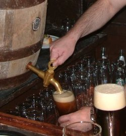
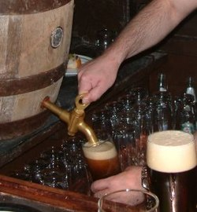
啤酒是一种由谷物 麦芽浆发酵而成的饮料。它通常由大麦或多种谷物混合制成，并用啤酒花调味。大多数啤酒在发酵过程中会自然产生碳酸。如果将发酵后的麦芽浆蒸馏，则变成了烈酒。啤酒是世界上消费量最大的酒精饮料。[ 33 ]
苹果酒
编辑苹果酒（Cider）或 cyder（/ ˈ s aɪ d ər / SY -dər）是一种由任何果汁制成的发酵酒精饮料；例如苹果汁（传统且最常见）、桃子汁、梨汁（“梨酒”）或其他水果。苹果酒的酒精含量从 1.2% ABV到传统英式苹果酒的 8.5% 或更高不等。在某些地区，苹果酒可能被称为“苹果酒”。[ 34 ]
发酵水
编辑发酵水是一种以乙醇为基础的水溶液，酒精度约为15-17%，不含甜味剂。发酵水仅用白砂糖、酵母和水发酵而成。发酵后，发酵水澄清，呈无色或灰白色液体，除了乙醇的味道外，没有其他可辨别的味道。
米德
编辑蜂蜜酒（/ m iːd /），也称为蜂蜜水，是一种由蜂蜜加水发酵制成的酒精饮料，有时还会加入各种水果、香料、谷物或啤酒花。蜂蜜酒的酒精含量范围从最低3%到超过20%不等。蜂蜜酒的显著特征是，其可发酵糖分主要来自蜂蜜。蜂蜜酒也被称为“蜜酒”。
普逵酒
编辑普逵酒是一种中美洲发酵饮料，由龙舌兰（Agave americana）的“蜜汁”制成。普逵酒可以蒸馏制成龙舌兰酒或梅斯卡尔酒。[ 35 ]
米酒
编辑米酒是一种由大米发酵并蒸馏而成的酒精饮料，在东亚、东南亚和南亚地区广泛饮用。清酒、黄酒、米酒和清酒是东亚常见的米酒。
葡萄酒
编辑 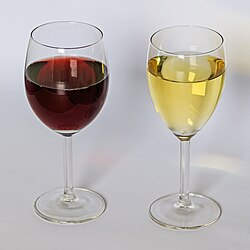
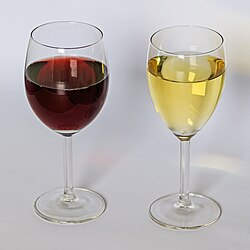
葡萄酒是一种发酵饮料，通常由葡萄酿造而成。葡萄酒的发酵过程比啤酒更长，而且通常需要较长的陈酿过程（数月或数年），酒精含量通常为 9%–16% ABV。
蒸馏饮料
编辑
蒸馏饮料 (也称为烈酒或白酒) 是通过蒸馏(即通过蒸馏浓缩)谷物、水果或蔬菜发酵产生的乙醇而制成的酒精饮料。 [36] 酒精含量至少为 20% ABV 的不加糖的蒸馏酒精饮料称为烈酒。 [37]最常见的蒸馏饮料，如威士忌和伏特加，酒精含量约为 40%。北美使用烈酒一词来区分蒸馏饮料和未蒸馏饮料（隐含的酒精度数较低）。白兰地、杜松子酒、梅斯卡尔酒、朗姆酒、龙舌兰酒、伏特加、威士忌、白酒、烧酒和韩国烧酒都是蒸馏饮料的例子。 蒸馏可以浓缩酒精，并消除一些同类物。冷冻蒸馏将苹果白兰地中的乙醇与甲醇和杂醇（通过蒸馏部分去除的发酵副产品）一起浓缩。
加强型葡萄酒是指在葡萄酒（例如波特酒或雪利酒）中添加蒸馏饮料（通常是白兰地）的葡萄酒。 [ 38 ]加强型葡萄酒与用葡萄酒酿造的烈酒的区别在于，烈酒是通过蒸馏方法制成的，而加强型葡萄酒是在葡萄酒中添加了烈酒。人们开发了许多不同类型的加强型葡萄酒，包括波特酒、雪利酒、马德拉酒、玛萨拉酒、卡曼达里亚酒和加香型葡萄酒苦艾酒。[ 39 ]
正直的精神
编辑精馏烈酒，也称为“中性谷物烈酒”，是通过“精馏”（即反复蒸馏）净化的酒精。“中性”指的是烈酒缺乏风味，而如果将麦芽汁成分蒸馏至较低的酒精纯度，就会产生这种风味。精馏烈酒也不含任何蒸馏后添加的调味剂（例如，杜松子酒会添加调味剂）。其他类型的烈酒，例如威士忌（或威士忌酒），会蒸馏至较低的酒精含量，以保留麦芽汁的风味。
精馏酒精是一种清澈、无色、易燃的液体，酒精度可达95% 。它常用于药用。它可能是谷物精制而成，也可能由其他植物制成。它可用于调制混合饮料、利口酒和酊剂，也可用作家用溶剂。
同源物
编辑在酒精饮料行业中，同类物是指发酵过程中产生的物质。这些物质包括少量化学物质，例如偶尔需要的醇类，如丙醇和3-甲基-1-丁醇，以及一些不需要的化合物，如丙酮、乙醛和乙二醇。同类物决定了蒸馏酒精饮料的大部分口感和香气，也影响了非蒸馏饮料的口感。[ 40 ]有人认为这些物质会导致宿醉症状。[ 41 ] 单宁是与酚类化合物一起存在于葡萄酒中的同类物。葡萄酒单宁会增加苦味，有干燥感，尝起来有草本味，通常被描述为收敛性。葡萄酒单宁增加了葡萄酒的平衡性、复杂性和结构性，并使葡萄酒的陈年时间更长，因此它们在葡萄酒的陈酿中起着重要作用。[ 42 ]
顶级酒类
编辑顶级酒类（或“高档酒类”）是市场营销中用来描述价格较高的酒精饮料的术语，通常存放在酒吧的顶层架子上。[ 43 ]
混合饮料及其他
编辑混合饮料是指两种或两种以上成分混合而成的饮料，通常含有酒精。[ 44 ]
酒精饮料
编辑酒精饮料（或冷饮）是指某些酒精含量相对较低的混合酒精饮料（例如，酒精含量为3-7% ），包括：
酒精粉
编辑酒精粉、粉末状酒精或干酒精通常采用微胶囊技术制成。用水冲调后，粉末就变成了酒精饮料。[ 46 ]
好喝
编辑井饮或轨道饮是一种使用成本较低的酒类制成的酒精饮料或混合饮料，这些酒类存放在酒吧的“快速轨道”、“快速架”或“井”中，调酒师可以轻松拿到这些酒。“井”是调酒师用来准备饮料的架子或架子，比酒吧低。[ 47 ] [ 48 ] [ 49 ]
使用量
编辑 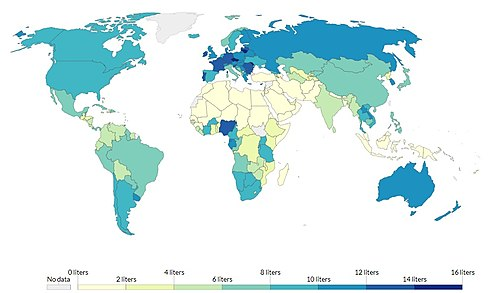
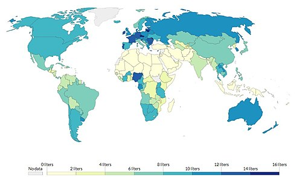
 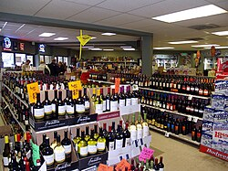
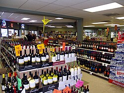
截至 2016 年，全球饮酒人口平均[更新]为 24 亿，男性为 39%，女性为 25%。[ 4 ]女性平均每天饮酒 0.7 杯，男性为 1.7 杯。[ 4 ]世界不同地区的饮酒率差异很大。[ 4 ]
 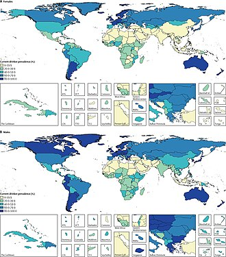
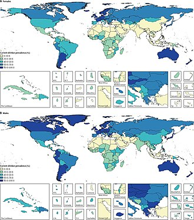 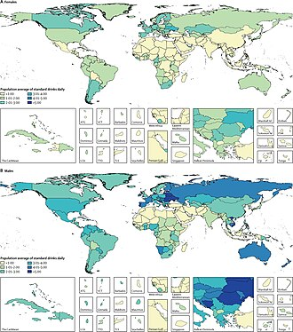
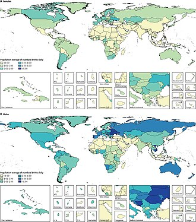{kind=link}
用途
编辑活动
编辑饮酒游戏
编辑饮酒游戏是指人们在饮酒后通常会经历醉酒状态的游戏。饮酒游戏存在的证据可以追溯到古代。一些机构，尤其是高校，已经禁止饮酒游戏。[ 51 ]
饮酒歌
编辑饮酒歌是喝酒时唱的歌曲。
体验
编辑饮酒场所
编辑啤酒花园
编辑啤酒花园（德语：Biergarten）是一个户外区域，供应啤酒和食物，通常是在树荫下的共用桌子上。
啤酒馆
编辑啤酒馆（德语：Bierpalast、Bierhalle）是一家专门供应啤酒的大型酒吧。
苹果酒屋
编辑苹果酒屋 (Cider House)是指出售供店内饮用的苹果酒的场所。有些苹果酒屋也出售外带苹果酒，供店外饮用。传统的苹果酒屋通常只是农舍或小屋里的一个房间，出售本地发酵的苹果酒。
奥泽里
编辑ouzeri （希腊语ουzeερί IPA：[uzeˈri]）是一种希腊小酒馆，供应茴香酒（希腊酒）和mezedes（小点心）。
普尔奎里亚斯
编辑Pulquerías （或 pulcherías）是墨西哥的一种酒馆，专门供应一种名为pulque的酒精饮料。
提基酒吧
编辑提基酒吧是一种主题饮酒场所，供应精心调制的鸡尾酒，尤其是以朗姆酒为基酒的混合饮料，如Mai Tai和Zombie鸡尾酒。[ 52 ] 提基酒吧的美学特征在于其提基文化装饰，这种装饰基于对热带文化（最常见的是波利尼西亚文化）的浪漫化概念。
棕榈酒店
编辑棕榈酒店是印度部分地区（尤其是喀拉拉邦）常见的一种饮酒场所，人们在那里将棕榈棕榈酒（一种用棕榈树汁液制成的温和酒精饮料）与食物一起供应。
酒吧
编辑葡萄酒吧是一种类似酒馆的经营方式，专注于销售葡萄酒，而不是烈酒或啤酒。许多葡萄酒吧的典型特征是提供种类繁多的杯装葡萄酒。有些葡萄酒吧会专门销售特定产地的葡萄酒，例如意大利葡萄酒或香槟。[需要引用]虽然许多葡萄酒吧是私人“独立”场所，但在某些情况下，葡萄酒吧会与特定的葡萄酒零售商或其他葡萄酒销售点合作，为该零售商的葡萄酒产品组合提供额外的营销。在许可法规允许的国家/地区，一些葡萄酒吧也会出售其提供的葡萄酒，实际上充当了葡萄酒商店和葡萄酒吧的混合体。
节日
编辑啤酒节
编辑啤酒节是提供各种啤酒的活动。啤酒节可能有一个主题，例如特定地区的啤酒，或者特定酿造风格的啤酒，例如冬季艾尔啤酒。
葡萄酒节
编辑一年一度的葡萄酒节是为了庆祝葡萄种植，通常在葡萄收获后举行。在北半球，收获期通常在九月底，持续到十月甚至更晚。葡萄酒节在世界各地的大多数葡萄酒产区都很常见，并被视为其他收获节的传统。
品尝
编辑啤酒品尝
编辑 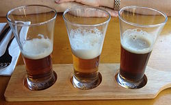
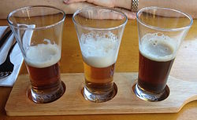
品酒是 了解啤酒历史、原料和酿造工艺，以及不同啤酒风格、啤酒花、酵母和啤酒外观的一种方式。一种常见的方法是分析啤酒的外观、气味和口感，然后对啤酒的品质做 出最终判断。啤酒记者和专家使用各种标准来评价啤酒，例如英国侍酒师杰西斯·罗宾逊 (Jancis Robinson) 使用的 1-20 标准，以及美国侍酒师约书亚·M·伯恩斯坦 (Joshua M. Bernstein) 使用的 1-100 标准。葡萄酒与烈酒教育基金会 (Wine & Spirit Education Trust) 等专业机构通常使用口头评分来评估啤酒，评分范围从“有缺陷”到“优秀”，共 1-5 分。
品酒
编辑另一方面，品 酒是对葡萄酒进行感官检查和评估。虽然品酒的实践历史悠久，但自14世纪以来，人们已经建立了一套更为正式的方法。现代专业的品酒师使用专业术语来描述葡 萄酒的各种风味、香气和一般特征。更非正式、更休闲的品酒活动可能也使用类似的术语，但分析过程较少，对葡萄酒的欣赏也更一般、更个人化。
旅游
编辑啤酒旅游
编辑精酿啤酒旅游是指旅游的主要目的是参观啤酒厂、参加啤酒节、啤酒相关活动或其他活动，让参加者体验精酿啤酒制作、消费和购买过程的各个方面。[ 53 ]
葡萄酒旅游
编辑葡萄酒旅游（Enotourism）、葡萄酒观光（Oenotourism）、葡萄酒旅游（Wine Tourism）或葡萄酒旅游（Vinitourism）是指以品尝、饮用或购买葡萄酒为目的的旅游，通常在产地或产地附近进行。其他类型的旅游通常较为被动，而葡萄酒旅游则包括参观酒庄、品酒、葡萄园漫步，甚至积极参与采摘活动。
食物
编辑开胃酒和餐后酒
编辑开胃酒是指通常在餐前饮用以刺激食欲的任何酒精饮料，[ 54 ]而餐后酒是指在餐后饮用以促进消化的任何酒精饮料。加强葡萄酒、利口酒和干香槟是常见的开胃酒。由于开胃酒是在餐前饮用，所以它们通常是干的而不是甜的。例如， Cinzano是一种苦艾酒品牌。餐后酒包括白兰地、加强葡萄酒和草药烈酒（Drambuie）。
烹饪
编辑
纯乙醇对人类来说味道是苦的；有些人也把它描述成甜的。[ 55 ]然而，乙醇也是许多脂肪物质和精油的中等有效的溶剂。这使得调味剂和着色剂可以作为酒精饮料中的味觉掩蔽物，尤其是在蒸馏饮料中。一些调味剂可能天然存在于饮料的原料中。啤酒和葡萄酒也可以在发酵前调味，烈酒可以在蒸馏之前、期间或之后调味。有时，将饮料在橡木桶中静置数月或数年可以获得风味，橡木桶通常由美国橡木或法国橡木制成。一些品牌的烈酒在装瓶时还会将水果或香草放入瓶中。
葡萄酒在烹饪中的重要性不仅在于它可以作为佐餐饮料，还在于它可以作为调味剂，主要用于高汤和炖菜中，因为它的酸度可以平衡浓郁的咸味或甜味菜肴。[ 56 ] 葡萄酒酱汁是一种以葡萄酒为主要原料的烹饪酱汁。[ 57 ]天然葡萄酒的酒精含量范围很广，从低于 9% 到高于 16% ABV，大多数葡萄酒的酒精含量在 12.5–14.5% 之间。[ 58 ] 加强葡萄酒（通常用白兰地）的酒精含量可能达到或超过 20%。
食品防腐剂
编辑酒精曾被用来保存食物。[ 59 ]
| 了解更多
本节需要扩展。您可以添加内容来提供帮助。（2024 年 3 月）
|
饮用食物
编辑总是与酒精饮料一起食用的食物的术语：
- 安居——韩语中“饮酒食物”的意思
- Kap klaem——泰语中“喝的食物”的意思
- Sakana——日语中指喝酒时吃的小吃
醋的生产
编辑醋（vyn egre；酸酒）是乙酸和微量化合物（可能包括调味剂）的水溶液。醋的体积分数通常为 5% 至 18%。[ 60 ]通常，乙酸是通过双重发酵产生的，即酵母将单糖转化为乙醇，醋酸菌将乙醇转化为乙酸。[ 61 ]
制作醋的原料多种多样——包括不同的水果、谷物、酒精饮料和其他可发酵材料：[ 62 ]
- 苹果醋，又称苹果醋，是用苹果酒制成的醋。[ 63 ]
- 米醋是用米酒酿制的醋。
葡萄酒与食物的搭配
编辑 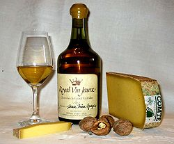
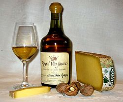
餐酒搭配是指将菜肴与葡萄酒搭配，以提升用餐体验的过程。在许多文化中，葡萄酒作为餐桌上的主食由来已久，并且在某种程度上，一个地区的酿酒和烹饪传统多年来共同发展。当地美食并非遵循一套规则，而是简单地与当地葡萄酒搭配。现代的餐酒搭配“艺术”是一个相对较新的现象，它催生了一个书籍和媒体行业，提供特定食物和葡萄酒的搭配指南。在餐饮业，侍酒师通常会在场为客人提供餐酒搭配建议。搭配背后的主要理念是，食物和葡萄酒中的某些元素（例如质地和风味）会相互作用，因此找到这些元素的正确组合将使整个用餐体验更加愉悦。然而，口味和享受是非常主观的，对一位品尝者来说可能是“教科书式完美”的搭配，对另一位品尝者来说可能就不那么令人愉快了。[ 64 ]
祭品
编辑民间圣人
编辑酒精饮料是献给民间圣人 马克西姆[ 65 ]和圣死亡[ 66 ]的典型祭品。这两位民间圣人都被描述为毒品圣人。[ 68 ] [ 69 ]
宗教
编辑奠
编辑奠酒是一种仪式，将液体或谷物（例如米）倾倒，作为对神灵或灵魂的祭品，或为了纪念逝者。它在许多古代宗教中很常见，并且在当今的文化中仍然保留着。葡萄酒或其他酒精饮料也常用于奠酒。
非洲
编辑
奠酒是古埃及社会的一部分，人们用酒来祭祀和取悦各种神灵、神圣的祖先、在场的人类以及不在场的活着的人，以及周围的环境。[ 70 ]有人认为奠酒起源于尼罗河上游的某个地方，后来传播到非洲乃至世界其他地区。[ 71 ] [ 72 ]据阿伊·奎·阿玛 (Ayi Kwei Armah)所说，“这个传说解释了非洲大陆上一种祈福习俗的兴起：奠酒，即向祖先和神灵倾倒酒精或其他饮料作为祭品。” [ 73 ]
美洲
编辑在南美安第斯山脉的克丘亚人和艾马拉人文化中，人们通常会在饮酒前将少量酒洒在地上，以此祭祀帕查玛玛（Pachamama，大地之母）。饮用奇恰酒（Chicha）时尤其如此，奇恰酒是这一地区独有的酒类。这种祭酒仪式通常被称为“challa”，在餐前和庆祝活动中经常举行。十六世纪作家贝尔纳迪诺·德·萨阿贡（Bernardino de Sahagún）记录了与饮用奥克特利（octli）相关的阿兹特克仪式：
奠酒仪式如下：当奥克特利（Octli）喝完时，当人们品尝新的奥克特利（Octli）时，当有人刚刚酿造奥克特利（Octli）时……他都会召集众人。他将酒盛在炉前的一个容器中，并配上小杯，供大家饮用。在大家饮酒之前，他先用杯子拿起奥克特利（Octli），然后将其倒在炉前；他将奥克特利（Octli）倒向四方。倒完奥克特利后，众人便一饮而尽。[ 74 ]
基督教的圣餐酒
编辑
圣餐仪式中饮用的圣酒通常仅限于一小口或少量，这样不会导致参与者血液中的酒精含量明显增加。这种有节制、象征性地饮用圣酒是圣餐仪式不可或缺的一部分，不会导致醉酒。
天主教
编辑根据天主教会的规定，圣餐中使用的圣酒必须含有酒精。现行《教会法典》（1983年）第924条规定：
§3 葡萄酒必须纯天然，由葡萄酿造，且未经腐烂。[ 75 ]
路德教
编辑289. 圣事中有形可见的部分有哪些？
可见的元素是面包和酒。
935. 马太福音 26:26-27 耶稣拿起饼来……然后拿起杯来。
注：圣经中“葡萄的果实”（路加福音22:18）指的是葡萄酒，而不是葡萄汁。另见哥林多前书11:21 [ 76 ]
美国福音派路德教会(ELCA) 的一些教会为儿童和戒酒者提供葡萄汁，有些教会还会为对小麦、麸质或葡萄过敏的人提供葡萄汁。[ 77 ]
酊剂
编辑 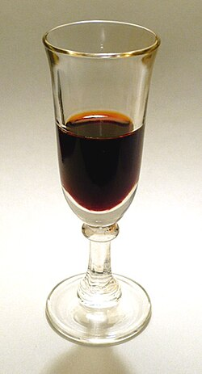
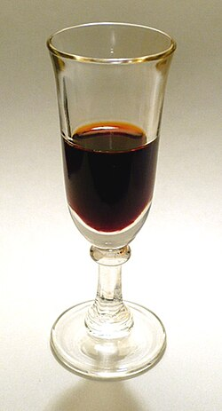
酊剂通常是将植物或动物提取物溶于乙醇（乙醇）中制成的。溶剂浓度通常为 25% 至 60%，但最高可达 90%。[ 78 ]在化学中，酊剂是指以乙醇为溶剂的溶液。在草药中，酒精酊剂的乙醇浓度各不相同，但出于保存目的，酒精浓度至少应为 20%。[ 78 ] [ 79 ]
其他
编辑人们经常点燃火焰饮料以达到美观和娱乐的目的。
人们会在诸如国际啤酒日、国际威士忌日或国家伏特加日等节日饮用酒精饮料。人们也会在诸如国际妇女合作酿酒日等社交活动中饮用酒精饮料，在这类活动中，人们会聚在一起酿造啤酒。
酒精测量
编辑酒精计量单位是确定饮料中酒精含量的计量单位。饮料中的酒精浓度通常以体积比(ABV) 表示，果汁中的酒精浓度低于 0.1%，而烈酒中的酒精浓度则极少数情况下高达 98%。全球都使用“标准杯”来量化酒精摄入量，但其定义因国家而异。酒精饮料的饮用量也因国家而异。
饮料专用设备
编辑
专业
编辑法律
编辑
酒精法律规范酒精饮料的生产、包装、标签、分销、销售、消费、机动车驾驶员血液酒精含量、开瓶容器以及运输。此类法律通常旨在减少饮酒对健康和社会的不利影响。具体而言，酒精法律规定了法定饮酒年龄，通常在15至21岁之间，有时取决于酒精饮料的种类（例如，啤酒、葡萄酒、烈酒或蒸馏酒）。一些国家没有法定饮酒或购买年龄，但大多数国家将最低年龄设定为18岁。[ 1 ]
一些国家，例如美国，其饮酒年龄高于法定成年年龄（18 岁），全美 50 个州的法定成年年龄均为 21 岁。此类法律可能采取仅允许向有执照的商店、专卖商店或酒吧分销酒精的形式，并且通常与税收相结合，这有助于减少对酒精的需求（通过提高价格），并且这也是政府的一种收入形式。这些法律还通常限制可以出售或供应酒精的时间或日期（例如“蓝色法律”），这在美国和加拿大酒吧的“最后点酒”仪式中也可以看到，由于服务时间截止法律，调酒师和服务员会要求顾客最后点酒。在一些国家，酒精不能出售给已经醉酒的人。许多国家的酒精法律禁止酒后驾车。
在某些司法管辖区，酒精饮料因宗教原因（例如，实行伊斯兰教法的伊斯兰国家）或出于地方选择、公共卫生和道德原因（例如，美国1920年至1933年的禁酒令）而被完全禁止。在执行伊斯兰教法的司法管辖区，饮用酒精饮料属于违法行为[ 80 ]，尽管此类法律可能会豁免非穆斯林的义务[ 81 ] 。
与酒精有关的犯罪
编辑 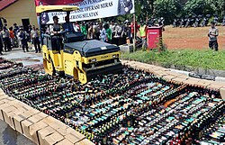
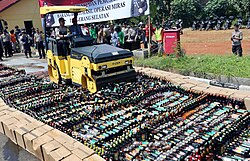
酒精被用于走私酒类，即在法律禁止运输的地方走私酒精饮料的非法活动。
葡萄酒造假与葡萄酒的商业行为息息相关。最常见的造假类型是葡萄酒掺假，通常是添加廉价产品（例如果汁），有时还会添加有害化学物质和甜味剂（以弥补颜色或风味）。
在大多数国家，生产和销售私酒都是非法的。在禁酒令时期的美国，私酒的蒸馏是在夜间进行的，以防止被发现。[ 82 ]私酒蒸馏完成后，被称为“跑腿”或“私酒贩”的司机会驾驶经过特殊改装以提高速度和载重量的汽车，将私酒走私到全国各地。[ 83 ]
在澳大利亚，sly-grog shop（或 shanty）是指无照经营的酒店、酒铺或其他出售酒精饮料的场所，有时还带有出售劣质产品的含义。[ 85 ]
Pruno，又称监狱烈酒或监狱葡萄酒，在美国是指一种即兴调制的酒精饮料。它的配料多种多样，包括苹果、橙子、水果鸡尾酒、果汁、硬糖、白砂糖、高果糖浆，可能还会添加其他配料，例如碎面包。[ 86 ]
大多数国家都有专门针对酒后驾驶的法律。酒后驾驶（DUI）或醉酒驾驶（DWI）是指在受到酒精或其他药物（包括医生处方的药物）影响的情况下驾驶机动车辆的犯罪行为。[ 87 ]
不同司法管辖区关于公共醉酒的法律差异很大，但都包括公共滋扰法、开瓶法，以及禁止在公共场所或特定区域饮酒的法律。 [ 88 ]
酒精对健康的影响
编辑酒精是一种镇静剂，低剂量可产生欣快感，减轻焦虑，并增强社交能力。高剂量则会导致醉酒、昏迷、昏迷甚至死亡。一项对107项队列研究的荟萃分析得出结论，每日少量饮酒并无健康益处，即使每日饮酒量相对较低（女性超过2杯，男性超过3杯），饮酒量增加也会增加健康和死亡风险。[ 89 ] [ 90 ]
饮酒的短期影响包括焦虑、运动技能和欣快感的下降（低剂量时）、醉酒（中毒）、昏迷、昏迷、前行性遗忘症（记忆“断片”）以及高剂量的中枢神经系统抑制。细胞膜对酒精的通透性很高，因此一旦酒精进入血液，它就能扩散到几乎身体的每个细胞中。酒精会大大加剧睡眠问题。在戒酒期间，睡眠规律和睡眠模式的残留紊乱是复发的最大预测因素。[ 91 ]长期饮酒会导致酒精使用障碍，增加出现身体依赖、心血管疾病和多种癌症的风险。
 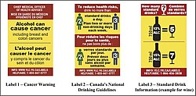
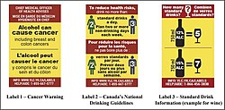
一些国家已经在酒精饮料包装上引入了警示信息，告知消费者有关酒精与癌症以及胎儿酒精综合症的信息。[ 92 ]在酒精饮料上添加警示标签历来受到禁酒运动组织（如基督教妇女禁酒联盟）以及医疗组织（如爱尔兰癌症协会）的支持。[ 93 ] [ 94 ]
国际癌症研究机构将乙醇列为致癌物，并指出：“有充分的证据和研究表明，饮酒后肝酶排出的乙醛（乙醇的主要代谢产物）具有致癌性。” [ 95 ]世界卫生组织也将酒精视为致癌物，任何饮酒量都存在风险。[ 96 ]世卫组织估计，在欧洲区域，近一半与酒精有关的癌症与轻度或中度饮酒有关，轻度或中度饮酒的定义是“每周饮用少于 1.5 升葡萄酒、少于 3.5 升啤酒或少于 450 毫升烈酒”。[ 96 ]
美国公众对饮酒与癌症之间联系的认识低得惊人。[ 97 ]美国卫生局局长维韦克·穆尔蒂博士要求对酒精饮料加注致癌警告。[ 98 ]
参见
编辑参考
编辑- ^ a b跳转至： “最低法定年龄限制”。IARD.org 。国际理性饮酒联盟。原著存档于2016 年 5 月 4 日。2016年6 月 23 日检索。
- ^ Henry, Yeomans (2014年6月18日)。《酒精与道德规范：公众态度、烈酒措施与维多利亚时代的宿醉》。Policy出版社，第244页。ISBN： 978-1-4473-0994-9。
- ^ a b跳转至： Jernigan, D; Ross, CS (2020 年 3 月)。“酒精营销格局：酒精行业规模、结构、策略和公共卫生应对” 。《酒精与药物研究杂志》。增刊。Sup 19 (Suppl 19)：13–25。doi：10.15288/ jsads.2020.s19.13。PMC 7064002。PMID 32079559。
- ^ a b c d e f跳转至： Griswold, Max G.；富尔曼，南希；霍利，凯特琳；阿里安，尼古拉斯；齐姆森，斯蒂芬妮·R·M.；泰姆森，海莉·D.；文卡特斯瓦兰，维迪亚；塔普，奥斯汀·道格拉 斯；福鲁赞法尔，穆罕默德·H.；萨拉马，约瑟夫·S.；阿巴特，卡尔基丹·哈森；阿巴特、德古；阿拜，所罗门 M.；阿巴法蒂，克里斯蒂安娜；阿卜杜勒卡德尔，里兹万·苏利安卡奇；阿贝贝，泽格耶；阿博扬，维克多；阿布拉尔·穆罕默德·迈赫迪；阿查里亚，帕万； Adetokunboh，Olatunji O.；阿迪卡里，塔拉·巴拉夫； Adsuar，何塞·C.；阿法里德，莫森；阿加德，艾米莉·伊丽莎白；阿加瓦尔，吉娜；阿加扬 (Aghayan)，萨尔吉斯·阿加西 (Sargis Aghasi)； Agrawal, Sutapa；Ahmed, Muktar Beshir；Akibu, Mohammed；等人（2018年8月）。 “1990年至2016年195个国家和地区的酒精使用和负担：2016年全球疾病负担研究的系统分析”。《柳叶刀》。392 ( 10152): 1015–1035。doi : 10.1016/S0140-6736(18) 31310-2。ISSN 0140-6736。PMC 6148333。PMID 30146330。
- ^ “酒精事实与统计”。美国国立酒精滥用与酒精中毒研究所。美国国立卫生研究院。2018年8月。原件存档于2015年5月18日。 2018年10月8日检索。
- ^ Zielinski, Sarah (2011年9月16日)。《动物世界的酗酒者》。史密森尼学会。原著存档于2015年8月22日。 2015年7月29日检索。
- ^ “任何程度的饮酒对我们的健康都是不安全的”。世界卫生组织。2023年1月4日。
- ^ Patrick, Clarence Hodges (1952). 《酒精、文化与社会》。北卡罗来纳州达勒姆：杜克大学出版社（AMS出版社，纽约，1970年重印）。第 26-27页。ISBN
978-0-404-04906-5。
{{cite book}}：ISBN / 日期不兼容（帮助） - ^ " 研究人员称，以色列洞穴中发现“世界最古老啤酒厂”。BBC新闻。2018年9月15日。 2021年1月26日检索。
- ^ Agencies (2024年6月18日)。“世界上最古老的葡萄酒在西班牙的一座罗马陵墓中保存了2000年”。《国家报》英文版。检索日期：2024年7月30日。
- ^ 丹尼尔·科萨诺；曼努埃尔·罗曼，胡安；埃斯基韦尔，多洛雷斯；拉丰，费尔南多；鲁伊斯·阿雷博拉、何塞·拉斐尔（2024 年 9 月 1 日）。“对贝蒂卡罗马葡萄酒的考古化学新见解”。考古科学杂志：报告。57：104636。书目代码：2024JArSR..57j4636C。DOI：10.1016/j.jasrep.2024.104636。ISSN 2352-409X。
- ^ Rosso AM (2012)。“古代的啤酒和葡萄酒：有益的 补救措施还是神灵施加的惩罚？”。《亚得里亚海医学史学报》。10 (2): 237–262。PMID 23560753。
- ^ Brostrom GG，Brostrom JJ（2008年12月30日）。《葡萄酒生意：百科全书》。ABC-CLIO出版社，第6-页。ISBN ： 978-0-313-35401-4。
- ^ Chrzan, Janet (2013).酒精：文化背景下的社交饮酒. 劳特利奇出版社. 第13页. ISBN 978-0-415-89249-0。
- ^ McGovern, PE；Zhang, J.；Tang, J.；Zhang, Z.；Hall, GR；Moreau, RA；Nunez, A.；Butrym, ED；Richards, MP；Wang, C.-S.；Cheng, G.；Zhao, Z.；Wang, C. (2004)。“史前和史前时期中国的发酵饮料” 。美国国家科学院院刊。101 ( 51): 17593– 17598。Bibcode ：2004PNAS..10117593M。doi ：10.1073/ pnas.0407921102。PMC 539767。PMID 15590771。
- ^ McGovern P、Jalabadze M、Batiuk S、Callahan MP、Smith KE、Hall GR、Kvavadze E、Maghradze D、Rusishvili N、Bouby L、Failla O、Cola G、Mariani L、Boaretto E、Bacilieri R、This P、Wales N 和 Lordkipanidze D（2017 年 11 月）。“南高加索地区格鲁吉亚早期新石器时代葡萄酒” 。《美国国家科学院院刊》。114 ( 48 ) : E10309 – E10318。Bibcode：2017PNAS..11410309M。doi：10.1073/ pnas.1714728114。PMC 5715782。PMID 29133421。
- ^ McGovern, Patrick (2009). 《揭开过去的秘密》。加州大学出版社。第 66-71页。ISBN 978-0-520-25379-7。
- ^ 威尔福德，约翰·诺布尔 (1992年11月5日)。“伊朗遗址中的罐子揭示了公元前3500年的啤酒饮用者”。《纽约时报》 。 2010年11月10日检索。
- ^ “苹果酒的历史和起源”。2019年2月13日。原版存档于2021年6月21日。
- ^ “苹果酒的历史”。2022年4月25日。原版存档于2022年10月29日。检索日期：2022年10月29日。
- ^ 在希腊发现的古代葡萄泥， 2008 年 1 月 3 日 存档于Wayback Machine Discovery News。
- ^ al-Hassan, Ahmad Y. (2009). “8世纪阿拉伯文献中的酒精与葡萄酒蒸馏”。《炼金术研究：拉丁和阿拉伯炼金术与化学中的关键问题》 。希尔德斯海姆：Georg Olms Verlag出版社，第283-298页 。 （同样的内容也可以在作者的网站上找到 ，存档日期： 2015 年 12 月 29 日）；参见 贝特洛特，马塞林；胡达斯，奥克塔夫五世 (1893)。La Chimie au Moyen âge。卷。 一-三。巴黎：国家政府。第 I 卷，第 141、143 页。
- ^ a b c跳转至： 福布斯，罗伯特·詹姆斯（1970）。《蒸馏艺术简史：从起源到塞利尔·布鲁门塔尔去世》。精彩。ISBN 978-90-04-00617-1。原件存档于 2023 年 1 月 23 日。检索日期：2010 年6 月 28 日。
- ^ Holmyard, Eric John (1957).炼金术. 哈蒙兹沃思: 企鹅图书. ISBN
978-0-486-26298-7。
{{cite book}}：ISBN / 日期不兼容（帮助）第 51-52 页。 - ^ 威士忌：技术、生产和营销：酒精饮料手册系列第 2 页 Academic Press 2003
- ^ Artemas Ward，“Aqua Vitae”杂货商百科全书，第 11 页。 32.
- ^ 预防酒精滥用：酒精、文化与控制 作者：David J. Hanson 第 3 页
- ^ “美国的 饮酒史”。Alcohol.org 。
- ^ 加里森，詹姆斯·霍利（1954）。“第一部分导言”。收录于沃尔特·麦金托什·梅里尔（编）。《再见我一次：威廉·劳埃德·加里森兄弟詹姆斯·霍利·加里森的自白》 。波士顿：霍顿·米夫林出版社，第4页。
- ^ “澳大利亚重大事件”。《星期日泰晤士报》。第619期。澳大利亚新南威尔士州。1897年11月7日，第9页。 2019年2月25日检索– 通过澳大利亚国家图书馆。
- ^ Systembolaget.se关于 Systembolaget 于2007 年 10 月 18 日 存档于Wayback Machine
- ^ Edman, Johan (2015 年 9 月)，《禁酒与现代性：1885-1913 年酒精消费作为一个集体问题》，社会史杂志，49 (1): 20–52，doi：10.1093/jsh/shv029
- ^ Nelson, Max (2005).野蛮人的饮料：古代欧洲啤酒史. Abingdon, Oxon: Routledge. 第1页. ISBN 978-0-415-31121-2。原件存档于 2023 年 1 月 23 日。检索日期：2010 年9 月 21 日。
- ^ Martin Dworkin, Stanley Falkow (2006).原核生物：变形菌：α和β亚类. Springer出版社. 第169页. ISBN 978-0-387-25495-1. 2011 年7 月 29 日检索。
- ^ Super，《酒精饮料》，第 45-46 页。
- ^ “蒸馏酒/蒸馏酒”。大英百科全书。原著存档于2008年5月9日。 2013年2月5日检索。
- ^ Lichine, Alexis. Alexis Lichine 的新葡萄酒和烈酒百科全书（第 5 版）(纽约: Alfred A. Knopf, 1987 年), 707–709。
- ^ Lichine, Alexis (1987). Alexis Lichine 的新版葡萄酒与烈酒百科全书(第五版). 纽约: Alfred A. Knopf. 第236页. ISBN 978-0-394-56262-9。
- ^ Robinson, J. 编。（2006 年）。《牛津葡萄酒指南》（第 3 版）。纽约：牛津大学出版社。第 279页。ISBN 978-0-19-860990-2。
- ^ Ingraham, John L. (2010年5月)。“了解葡萄酒中的同类物”。葡萄酒商业分析。原版存档于2023年5月31日。检索日期：2024年5月1日。
- ^ “研究表明，威士忌宿醉比伏特加更严重” “。BBC新闻。2009 年 12 月 19 日。原版存档于 2023 年 1 月 23 日。2009年12 月 19 日检索。”
- ^ “葡萄酒的五大基本特征”。Wine Folly。2012年7月23日。原版存档于2015年3月15日。 2015年5月6日检索。
- ^ “什么是顶级酒类——这重要吗？| 葡萄酒爱好者”。www.wineenthusiast.com。2022年 4 月。检索日期：2024 年1 月 14日。
- ^ “鸡尾酒和混合饮料有什么区别？”。美食与美酒。 2023年5月5日检索。
- ^ SB1625, 伊利诺伊州议会 1977 存档于 2008-12-05 在Wayback Machine（1934 年酒类管制法修正案，第 6-35 节；235 ILCS 5/6-35）
- ^ “粉末酒精：一种封装” (PDF)。NABCA研究。国家酒精饮料控制协会。检索日期：2016 年1 月 4 日。
- ^ Lai A 编（2005）。《调酒101：混合技巧基础》。哈佛学生代理公司（第4版）。圣马丁出版社。第 7-9页。ISBN
978-0-312-34906-6在专业酒吧中，通常会用“高速吧台”取代前台吧台。
这 个架子连接在调酒师正前方的吧台或水槽上，用来放置前台酒水的“自有品牌”（通常是价格较低的品牌）。调酒师会根据顾客的喜好选择每杯酒的品牌，除非顾客 指定知名品牌，即调酒行话中的“自有品牌”。价格更高的自有品牌则放在后台吧台。这意味着，除非顾客特别要求（或您的酒吧使用 Kahlúa 作为自有品牌），否则您将使用普通咖啡白兰地而不是最常见的自有品牌 (Kahlúa) 来调制白俄罗斯鸡尾酒。酒类还有另一种分类，称为“高级”或“顶级”品牌。这些是品质更高的酒，例如孟买杜松子酒或 Old Grand Dad 波本威士忌。
- ^ Kulp K (2014).给宝贝的酒：聪明女人正确饮用烈酒的指南. Hundred Proof Publishing Co.，第 113 页. ISBN
978-0-9857731-0-6
酒架指的是调酒师放在吧台下方长架子上的酒瓶，称为酒架。这些酒通常是他们最便宜的酒，除非您或鸡尾酒单另有说明，否则通常会自动使用
。 - ^ Katsigris, Costas；Thomas, Chris（2012）。《酒吧与饮料书》（第5版）。John Wiley & Sons出版社，第704页。ISBN
9780470248454.
高速轨，高速架。一种与酒瓶宽度相同的酒瓶架，安装在吧台下设备的挡板上。
- ^ “人均酒精消费量”。我们的数据世界。原版存档于2020年3月16日。检索日期：2020年2月15日。
- ^ Jillian Swords。《阿巴拉契亚人》： “新酒精政策禁止饮酒游戏”。2007年9月18日。已于2009年7月16日存档于Wayback Machine 。
- ^ 克尔斯滕·斯文 (2000)。蒂基之书。塔申。 p。 55.
- ^ Franconi, Jennifer (2012). “啤酒游客：他们是谁” .马萨诸塞大学阿默斯特分校学术著作.
- ^ Caton, SJ; Ball, M; Ahern, A; Hetherington, MM (2004)。“酒精对 食欲和食物摄入量的剂量依赖性影响”。生理学与行为学。81 ( 1): 51–58。doi : 10.1016 /j.physbeh.2003.12.017。PMID 15059684。S2CID 22424908 。
- ^ Scinska, A; Koros, E; Habrat, B; Kukwa, A; Kostowski, W; Bienkowski, P (2000)。“人类乙醇味觉中的苦味和甜味成分”。药物与酒精依赖性。60 (2): 199–206。doi : 10.1016 /s0376-8716(99 ) 00149-0。PMID 10940547。
- ^ “用葡萄酒烹饪的6个秘诀”。原版存档于2017年3月22日。检索日期：2017年4月12日。
- ^ Parker, Robert M. (2008).帕克葡萄酒购买指南，第7版. 西蒙与舒斯特出版社. 第15页. ISBN 978-1-4391-3997-4。
- ^ Jancis Robinson（2006）。《牛津葡萄酒指南》（第3版）。牛津大学出版社。ISBN 978-0-19-860990-2。请参阅第 10 页的酒精浓度。
- ^ “乙醇作为食品防腐剂” 。 2024年4月21日检索。
- ^ “乙酸：一般信息”。GOV.UK 。政府数字服务。检索日期：2024年3月19日。
- ^ Nakayama, Takeyoshi (1959 年9月)。“乙酸菌研究 I. 乙醇氧化的生化研究”。《生物化学杂志》。46 (9 ) : 1217–1225。doi : 10.1093/oxfordjournals.jbchem.a127022。
- ^ “醋”。哈佛大学陈曾熙公共卫生学院。2019年10月1日。原著存档于2022年11月14日。 2020年3月4日检索。
- ^ Ulbricht CE 编（2010）。“苹果醋”。《天然标准草药与补充剂指南：循证参考》（第一版）。爱思唯尔出版。第59页。ISBN： 978-0-323-07295-3。
- ^ K. MacNeil《葡萄酒圣经》第83-88页 Workman Publishing 2001 ISBN 1-56305-434-5
- ^ Khan, Gulnaz (2018年1月24日)。“遇见马克西姆：酗酒、吸烟的圣人”。国家地理。原著存档于2018年6月12日。
- ^ Araujo Peña，桑德拉·亚历杭德罗；巴尔博萨·拉米雷斯·马里塞拉；加尔文·法尔孔·苏珊娜；加西亚·奥尔蒂斯·奥雷亚；乌里韦·奥尔达斯·卡洛斯。“El culto a la Santa Muerte: un estudio descriptivo” [死亡圣神崇拜：描述性研究]。Revista Psichologia（西班牙语）。墨西哥城：伦敦大学。2009 年10 月 7 日检索。
- ^ 赫克托·比利亚雷亚尔（2009 年 4 月 5 日）。“La Guerra Santa de la Santa Muerte” [死亡圣神的圣战]。Milenio Semana（西班牙语）。墨西哥城：Milenio。原始存档于 2009 年 10 月 16 日。2009 年10 月 7 日检索。
- ^ Vincent, Isabel (2021年12月21日)。“圣死神和其他五位‘宗教’圣徒受到贩毒集团崇拜”。《纽约邮报》 。 2022年6月10日检索。
- ^ Flannagin, Jake (2014年9月)。“毒品圣徒的崛起”。《大西洋月刊》 。 2022年6月10日检索。
- ^ Nehusi，Kimani SK (2016)。奠。生命周期中的非洲传统仪式。美国大学出版社。 p。 14.国际标准书号 978-0-7618-6710-4。
- ^ Delia，1992 年，第 181-190 页[需要完整引文]
- ^ James, George GM (1954). 《被盗的遗产》。纽约：哲学图书馆。
- ^ Armah, Ayi Kwei (2006). 《文士的雄辩：关于非洲文学来源和资源的回忆录》。塞内加尔波彭金：Per Ankh 出版社。第 207 页。
- ^ Sahagún，贝尔纳迪诺·德；亨利·B·尼科尔森（1997 年 3 月 23 日）。纪念普雷梅罗斯。俄克拉荷马大学出版社。国际标准书号 9780806129099– 通过 Google 图书。
- ^ 1983 年教会法典， 2006 年 6 月 19 日 存档于Wayback Machine
- ^ a b跳转至： Weber, Karl (2013年5月31日)。“哪棵葡萄树的果实？”。坚定路德宗。检索日期：2024年4月18日。
- ^ 一个教堂的例子。请参阅“欢迎”页面的“周日礼拜”部分。
- ^ a b跳转至： Groot Handboek Geneeskrachtige Planten 作者：Geert Verhelst
- ^ Ullian, Naomi (2016年9月19日)。“如何制作药用蘑菇双提取酊剂”。草药学院。检索日期： 2021年1月12日。
- ^ Williams, Lizzie.尼日利亚：布拉特旅游指南. 第 101 页。
- ^ 现代历史中的酒精与节制第329页 David M. Fahey、Ian R. Tyrrell (2003)
- ^ Sumich, Jason. “在被抓之前，一切都是合法的：在南阿巴拉契亚山脉私酿酒”。阿巴拉契亚州立大学。 2014年3月21日检索。
- ^ Cooper, William J.；Terrill, Thomas E. (2009). 《美国南部：一部历史》，第二卷（第四版）。马里兰州兰纳姆：Rowman & Littlefield 出版社。第 625 页。ISBN 978-0-7425-6097-0。
- ^ “申请将甲吡唑列入世界卫生组织基本药物标准清单” (PDF)。2012年11月，第10页。原件存档于2014年7月14日(PDF) 。 2020年10月4日检索。
- ^ “私酒商店（或棚户区）——阿拉鲁恩谷历史”。2024年1月17日。 2024年10月7日检索。
- ^ B. Lance, Courtney (2015年2月). Pruno, Ramen, and a Side of Hope . Post Hill Press. 第266页. ISBN 978-1618689252。
- ^ 酒后驾驶：向国会提交的酒精限制报告。美国运输部，国家公路交通安全管理局。1992 年，第 1 页。原件存档于 2024 年 9 月 5 日。2019年9 月 18 日检索。
- ^ Clinard, Marshall; Meier, Robert (2007年2月14日)。偏差行为社会学。Cengage Learning。第273页。ISBN 9780495093350。原件存档于 2024 年 9 月 5 日。检索日期：2019 年9 月 20 日。
- ^ Bisognano, John (2023年4月5日)。“每日酒精摄入量与全因死亡风险”。美国心脏病学会。
- ^ 分析表明，适量饮酒对健康无益于戒酒。《卫报》。2024年7月25日。ISSN 0261-3077 。2024年8月16日检索。
- ^ Feige B, Scaal S, Hornyak M, Gann H, Riemann D (2007年1月)。“酒精 依赖患者戒酒后睡眠脑电图频谱功率”。《酒精中毒：临床与实验研究》。31 (1): 19– 27。doi : 10.1111/j.1530-0277.2006.00260.x。PMID 17207097。
- ^ “部长确认，爱尔兰将在酒精产品上添加癌症警告标签”。《贝尔法斯特电讯报》。2018年9月26日。原著存档于2020年4月11日。检索日期：2023年2月20日。
- ^ Chandler, Ellen (2012)。“FASD - 胎儿酒精谱系障碍”。白丝带信号。117 (2): 2 。
- ^ Finn, Christina。“爱尔兰癌症协会敦促部长不要取消酒精产品上拟议的癌症警告标签”。TheJournal.ie 。原著存档于2023年2月20日。检索日期： 2023年2月20日。
- ^ 《IARC 专著分类的药剂》，第 1-111 卷， 2011 年 10 月 25 日存档于Wayback Machine。monographs.iarc.fr
- ^ a b跳转至： “任何程度的饮酒对我们的健康都是不安全的”。www.who.int 。原件存档于 2023 年 1 月 12 日。检索日期：2023 年1 月 12日。
- ^ 新报告描述了酒精与癌症之间的深层联系：科学家们继续重新思考适量饮酒有益健康的观点。作者：罗尼·卡琳·拉宾，《纽约时报》，2024 年 9 月 18 日。最后访问时间为 2024 年 9 月 26 日。
- ^ Rabin, Roni Caryn (2025年1月3日)。“卫生局局长呼吁对酒精饮料发出致癌警告”。《纽约时报》。ISSN 0362-4331 。检索日期：2025年1月8日。